Nuestras Carreras
Ingeniería en Gestión Empresarial
La Ingeniería en Gestión Empresarial posee un enfoque integral dentro de la organización, esto se traduce en un alcance transversal a todas las áreas de ésta. Contribuye a la gestión e innovación de procesos; así como al diseño, implementación y desarrollo de sistemas estratégicos de negocios, optimizando recursos en un entorno global, con ética y responsabilidad social..
¿Cómo se identifica un ingeniero en Gestion Empresarial?
Se identifica por su capacidad de optimizar procesos administrativos y productivos.
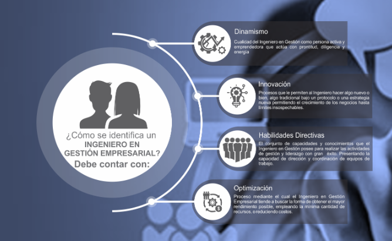¿Qué hace un ingeniero Gestion Empresarial?
El Ingeniero en Gestión Empresarial puede desempeñar eficientemente funciones derivadas del área de producción, calidad, finanzas, recursos humanos, mercadotecnia y auditoría, asimismo puede fungir como asesor o consultor de empresas, encargarse de la administración y gestión de instituciones públicas y privadas. además de diseñar productos. Gestiona sistemas integrales de calidad, ejerciendo un liderazgo efectivo y un compromiso ético, aplicando las herramientas básicas de la ingeniería.
Perfil de egreso
Profesional con habilidades en liderazgo, planeación estratégica, innovación y toma de decisiones.
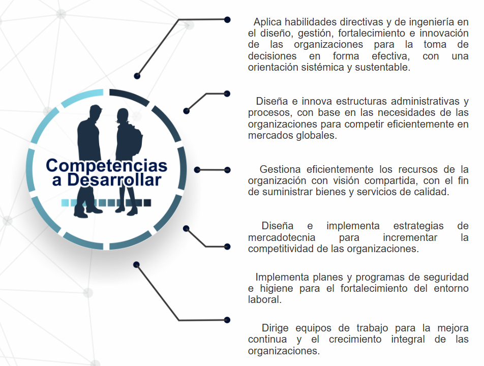Plan de estudios

Ingeniería en Administración
La Ingeniería en Administración es una de las ciencias que más ramas y divisiones posee, por lo que mantiene un amplio campo laboral y es catalogada como una de las ingenierías con mayor demanda en el mundo del comercio..
¿Cómo se identifica un ingeniero en Administracion?
¿Qué hace un ingeniero en Administracion?
Genera, desarrolla e innova empresas competitivas para la transformación económica y social. Toma decisiones en las empresas, con el objeto de minimizar riesgos.empresa. Utiliza eficientemente las tecnologías de la información y comunicación para optimizar los procesos y recursos en su práctica profesional. Planea, organiza, integra y dirige equipos de trabajo. Aplica habilidades directivas para el logro de los objetivos organizacionales. Promueve sistemas de calidad para el proceso de mejora continua en las empresas.
Perfil de egreso
Dentro de las capacidades, los conocimientos y habilidades que debe haber adquirido el estudiante al finalizar la Ingeniería en Administración serán:
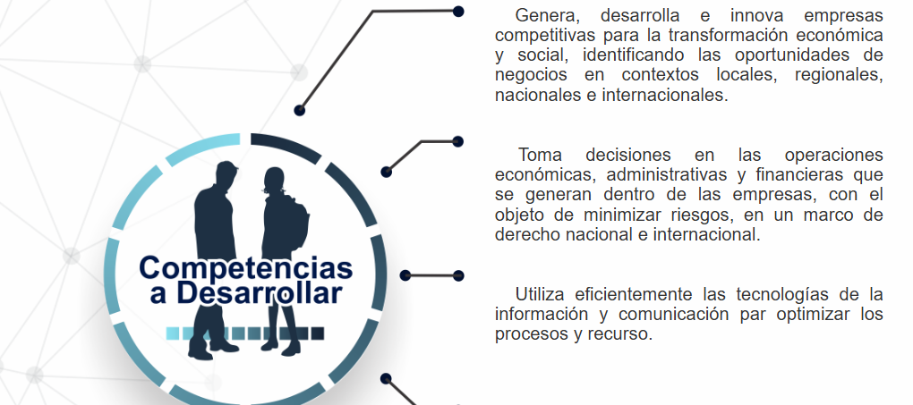Plan de estudios
Ingeniería en Sistemas Computacionales
La Ingeniería en Sistemas Computacionales crece de manera exponencial en el ámbito laboral dado que se forman profesionistas lídereres, analíticos, críticos y creativos con visión estratégica y amplio sentido ético, con capacidades de diseñar, implementar y administrar infraestructuras computacionales para aportar soluciones innovadoras en un contexto global, multidisciplinario y sustentable..
¿Cómo se identifica un ingeniero en Sistemas Computacionales?
Por su dominio en programación, redes y nuevas tecnologías.
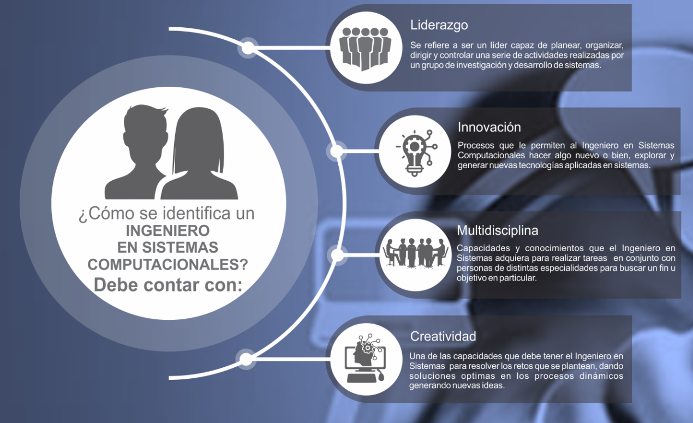¿Qué hace un ingeniero en Sistemas Computacionales?
Se desarrolla como líder capaz de planear, organizar dirigir y controlar una serie de actividades realizadas por un grupo de investigación y desarrollo de sistemas.Estar a cargo de todos los servicios informáticos de una compañía, así como la infraestructura tecnológica, técnica y humana que los hacen posibles. Desarrollar, operar y controlar sistemas informáticos.Administrar servicios informáticos. Responsabilizandose de la provisión de servicios informáticos o tele-informáticos que sirven de base a la labor de una organización. Es capaz no solamente de mantener en funcionamiento la infraestructura requerida para esto, sino también de coordinar un adecuado mantenimiento y renovación de equipos y sistemas computacionales de base. Implementar distintos tipos de redes, protocolos y esquemas de seguridad para garantizar el intercambio de información de manera confiable..
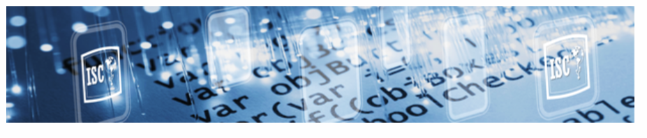Perfil de egreso
Dentro de las capacidades, los conocimientos y habilidades que debe haber adquirido el estudiante al finalizar la Ingeniería en Sistemas Computacionales serán:
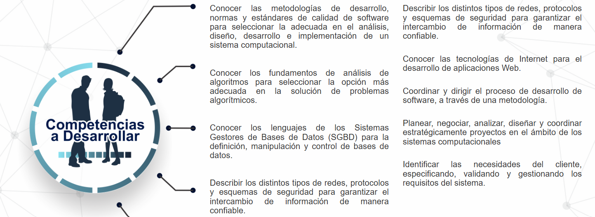Plan de estudios
Contador Público
El Contador Público tiene una posición indispensable en cualquier ente económico, la labor de los contadores contribuye a una sana administración y control y provee información financiera de utilidad para la toma de decisiones..
¿Cómo se identifica un Contador Publico?
Por su ética profesional, análisis numérico y precisión en informes financieros.
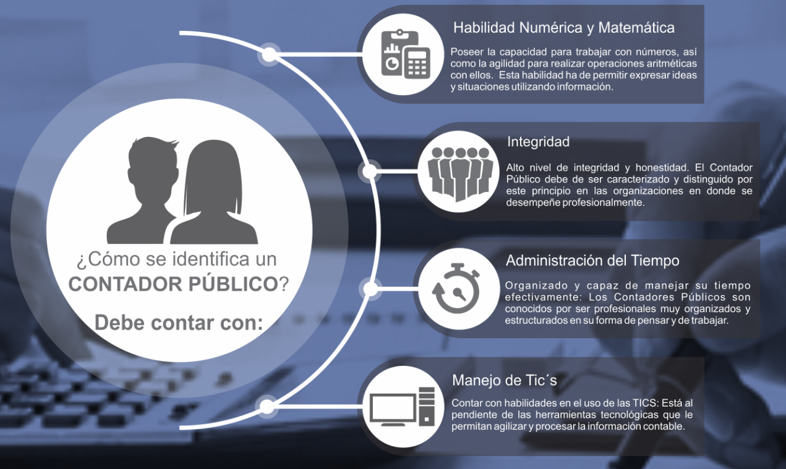¿Qué hace un Contador Publico?
Documenta informes financieros para los clientes. Maneja registros, sistemas y presupuestos contables y financieros. Hace auditorías financieras para sus clientes. Desempeña actividades de administración en inversiones y análisis Asesora a los clientes en materia financiera.
Perfil de igreso
El aspirante interesado en cursar la carrera de Contaduría Pública deberá contar con una sólida formación académica y un conjunto de habilidades que le permitan desenvolverse con éxito en este campo profesional. Los conocimientos, habilidades y actitudes que se consideran fundamentales para ingresar a esta carrera son: Matemáticas: Capacidad para resolver problemas numéricos, realizar cálculos precisos y comprender conceptos financieros. Estadística: Habilidad para interpretar datos, realizar análisis cuantitativos y tomar decisiones basadas en información estadística. Administración: Comprensión de los procesos organizacionales, gestión empresarial y toma de decisiones estratégicas. Economía: Conocimiento de los principios económicos básicos, tanto a nivel micro como macroeconómico, para entender el entorno empresarial. Informática: Manejo de herramientas tecnológicas y software básico, así como disposición para aprender sistemas especializados en contabilidad y finanzas
Perfil de Egreso
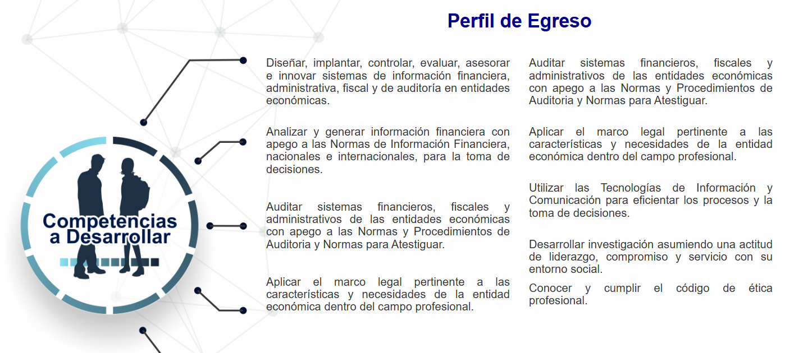Plan de estudios
Ingeniería en Industrias Alimentarias
Las nuevas tendencias en la industria alimentaria dirigen a la alimentación inteligente, aportando al consumidor a protegerse de enfermedades, los profesionistas de la Ingeniería en Industrias Alimentarias son quienes aportan con sólidos conocimientos científicos y tecnológicos, para desarrollar, mejorar y producir alimentos inocuos e innovadores que mejoren la calidad de vida.
¿Cómo se identifica un ingeniero en Industrias Alimentarias?
Por su conocimiento en biotecnología, química y procesos alimentarios.
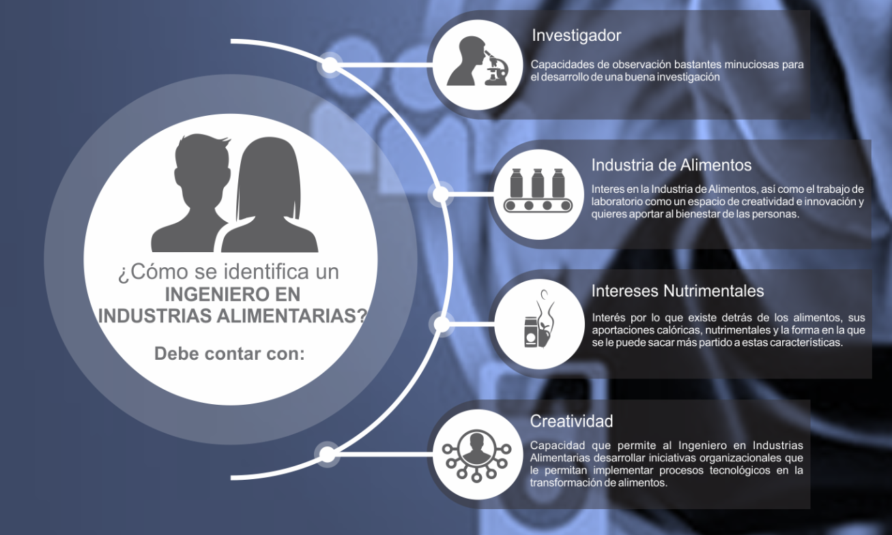¿Qué hace un ingeniero en Industrias Alimentarias?
Desarrolla, mejora y produce alimentos inocuos e innovadores; bajo un esquema ético y sustentable acorde a las necesidades de la sociedad en el ámbito regional, nacional e internacional. Provee soluciones a problemas de la ingeniería y tecnología del procesamiento de alimentos, a través del diseño de experimentos, el análisis e interpretación de datos estadísticos y modelos matemáticos que permitan el mejoramiento de la calidad de diferentes productos que ofrezca una organización.Formula, elabora y ejecuta proyectos de inversión pendientes a fortalecer el desarrollo del sector alimentario.Analiza, evalúa y diseña sistemas productivos alimentarios. Se desempeña en la administración logística y ventas en empresas procesadoras de alimentos, bebidas y aditivos asi como diseñadoras y constructoras de equipos y sistemas de embalaje y envasado. Innova y desarrolla productos alimentarios.
Perfil de egreso
Dentro de las capacidades, los conocimientos y habilidades que debe haber adquirido el estudiante al finalizar la Ingeniería en Industrias Alimentarias serán:
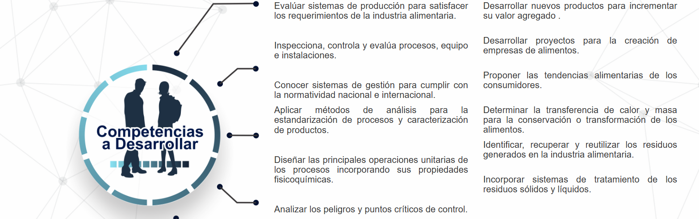Plan de estudios
Ingeniería en Electromecanica
La Ingeniería en ELECTRO ... es una de las ciencias que más ramas y divisiones posee, por lo que mantiene un amplio campo laboral y es catalogada como una de las ingenierías con mayor demanda en el mundo del comercio.
¿Cómo se identifica un ingeniero en Electromecanica?
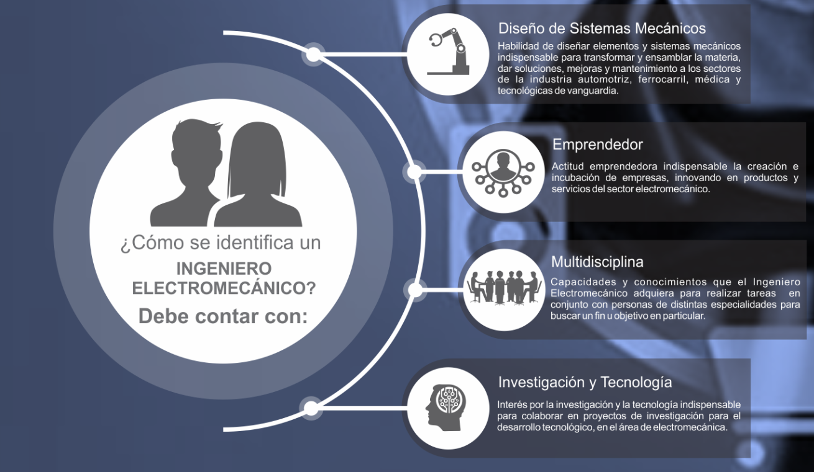¿Qué hace un ingeniero en Electromecanica?
El ingeniero electromecánico es un profesional preparado para desarrollar concapacidad, trabajos técnicos involucrados en el ámbito de los sistemas mecánicos, eléctricos, térmicos, hidráulicos, electrónicos e instalaciones en general.Construye y diseña nuevas máquinarias Dirige proyectos para mejorar la eficiencia de fabricación y producción. Comprende los mecanismos internos de las máquinas de ensamblaje robótico.
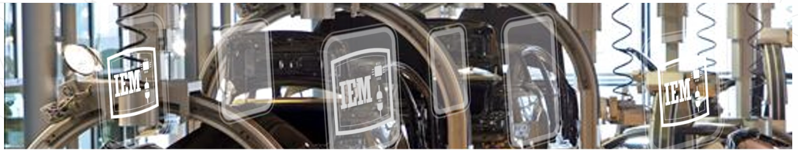Perfil de egreso
Dentro de las capacidades, los conocimientos y habilidades que debe haber adquirido el estudiante al finalizar la Ingeniería en Administración serán:
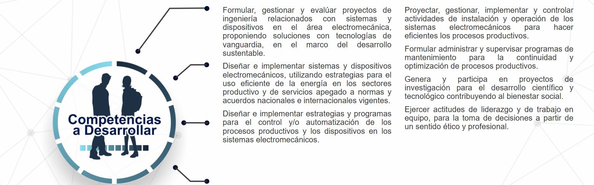